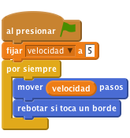
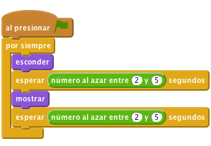
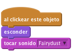
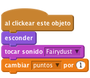
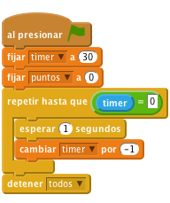

Caza de brujas
Nivel 1
En este proyecto vamos a Cazar Brujas. Consigues puntos por golpear a los fantasmas que aparecen en la pantalla. ¡La meta es conseguir todos los puntos que puedas en 30 segundos!

Elegir un objeto desde la biblioteca añade un nuevo fantasma al proyecto (usa el disfraz fantasía/ghost1).Ahora queremos que nuestro fantasma se mueva
Variable sólo para este objeto llamada velocidad.Fantasma1: velocidad.velocidad borra la variable y créala de nuevo, sólo para éste objeto.Quita la marca que hay en la casilla al lado del nombre de la variable en el apartado Datos para que no aparezca en el Escenario.
Esta variable va a controlar cómo de rápido se mueve el fantasma. Usamos una variable para poder cambiar la velocidad del juego según vamos avanzando.
Queremos que el fantasma se empiece a mover cuando inicia el juego, así que vamos a darle un programa como este:
![al presionar BANDERA VERDE
fijar [velocidad v] a [5]
por siempre
mover (velocidad) pasos](fd821c5169d88c4576067caa36e547bc1c5796ec.png)
Pulsa la bandera verde y mira qué hace tu fantasma. ¿Por qué se queda parado en el borde de la pantalla?
rebotar si toca un borde justo después del bloque movervelocidadpasos.
estilo de rotación: izquierda-derecha en las propiedades del objeto.Pulsa la bandera verde.
¿Se mueve el fantasma de un lado a otro de la pantalla?
Para que el juego sea más divertido, queremos que el fantasma aparezca y desaparezca al azar. Conseguiremos esto con otro programa que se ejecuta a la vez que el que mueve el fantasma. Este nuevo programa necesita esconder el fantasma durante un tiempo aleatorio y repetirlo por siempre (o hasta que el juego se acabe).

Pulsa la bandera verde.
¿Se mueve el fantasma de un lado a otro de la pantalla y aparece/desaparece al azar?
Para convertir esto en un juego, necesitamos que el jugador haga algo. Necesitan hacer click en el fantasma para que desaparezca. Cuando el fantasma sea pulsado queremos que desaparezca y suene un sonido.
En la pestaña Sonidos, añade un nuevo sonido Electrónica/fairydust, usando el botón Elegir un sonido desde la biblioteca.
Añade este programa al fantasma:

Pulsa la bandera verde.
¿Desaparece el fantasma y se oye un sonido cuando lo pulsas?
Tenemos un fantasma, pero ¡queremos hacer un juego! Queremos ganar puntos cada vez que pulsemos el fantasma pero también queremos tener un límite de tiempo. Podemos usar variables para la puntuación y el tiempo.
Variable para todos los objetos llamada puntos, y cambia el script del fantasma para que aumente la puntuación cada vez que pulsas.
timer a 30 y poner los puntos a 0. Luego usa un bloque repetir hasta que para esperar un segundo y luego restar 1 a timer.Esto se tiene que repetir hasta que el timer sea 0. En ese punto usaremos detener todo para parar el juego.

Pulsa la bandera verde.
¡Si un fantasma es divertido, más será mejor! Vamos a crear tres fantasmas.
Pulsa la bandera verde.
¿Tienes tres fantasmas moviéndose de un lado a otro de la pantalla, apareciendo y desapareciendo y que desaparecen cuando pulsas sobre ellos?
¡Bien hecho, has acabado! Ahora ¡Disfruta de tu juego!
No olvides que puedes compartir el juego con tu familia y amigos pulsando el botón Compartir en la barra de herramientas